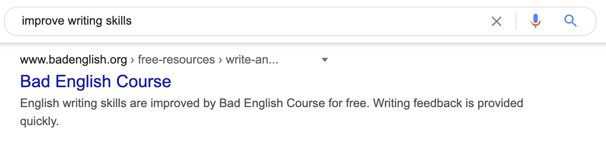

如何编写完美的元描述？¶
HTML 属性，用于描述页面内容。它可以在搜索结果中以摘录的形式出现在
元描述是一个属性，用于描述页面内容。它可以在搜索结果中以摘录的形式出现在 标题标签 下方，以提供更多内容。
以下是代码段的外观:
1 | |
虽然元描述属性不是一个排名因素，加之 Google 仅有 62.78％ 的时间会在搜索结果中显示它，但它仍然是内容发布者经常遇到的页面 SEO 的一部分。
在本指南中，你将学习如何快速创建出色的元描述以及如何有效地审核它们。但是首先，让我来解释一下，为什么元描述在 SEO 中看起来不太重要，却仍然很重要。
- 为什么元描述仍然很重要
- 如何编写元描述
- 如何判断元描述创建和编辑的优先级
- 出色的元描述示例
元描述为何仍然重要¶
一个引人入胜的元描述会吸引更多人在搜索结果中点击你的网站。 即使 Google 仅在 37％ 的时间内显示元描述，这一点也很重要。
例如，如果你的页面每月获得 50,000 次访问量，Google 会显示平均 18,500 次访问量的元描述。在这种情况下，即使你的页面点击率只是从 4％ 增加到 4.5％，也会增加近 100 次点击量。
因此，虽然你不应花太多的时间在元描述上，但花一分钟回答页面中的一个问题还是值得的：
- 该页面是否旨在推动自然流量？
- 是否有可能在社交媒体上共享该页面？
第二个问题可能需要一些解释。
你可以看到，当一个页面被共享在社交媒体上时，它会从 Open Graph meta tags（开放图元标记）中提取描述。
但是，如果你尚未设置 OG 或 Twitter 描述，它会显示元描述。 因此，如果你只想设置其中一个标记，则应设置元描述。
进入创建过程.…
如何撰写元描述¶
请按照以下五个步骤快速轻松地创建你的元描述：
- 展开标题标签
- 匹配搜索意图
- 使用主动语态
- 简明扼要
- 部署元描述
现在开始吧。
1. 展开标题标签¶
始终将描述视为对标题标签的补充。标题应该使用一些主题相关的主要关键词来概括页面。元描述则是一个进一步补充内容的机会。

在上述情况下，简短的描述即可激发用户单击我们的失效链接检查器，因为：
- 它检查页面和网站。
- 它考虑了内部和外部链接。
- 工具速度很快。
- 这不是一个引导陷阱；你可以直接在页面上使用它。
不用担心这里的关键词太多了。更重要的是，你要创建一些与读者相关并吸引点击的内容。在适当的地方使用你的 USP。
2. 匹配搜索意图¶
搜索意图就是人们“为什么”查询。换句话说，大多数人在搜索你的主要关键词时都在寻找什么？
- 他们需要什么信息吗？
- 他们想买什么东西吗？
- 他们在寻找一个特定的网站吗？
- 他们想快速找到一个问题的答案吗？
你可以将搜索结果当作一个代理人。 Google 致力于为搜索者提供最相关的结果，因此请在排名靠前的页面片段中寻找共性。
例如，几乎所有“元描述”的结果都在摘要中显示了定义…
……所以我们也要这么做。
其他的 SERP 可能没有那么简单，但是你总能找到一些线索。我们来搜索看看“如何打领带”：
所有的片段都讨论了不同类型的领结，并且大多数都提到了帖子中包含逐步说明。 这告诉我们这些东西对搜索者可能很重要，值得包含在元描述中。
要注意如“站立办公桌”这样有其他目的的 SERP。
你可以看到这里有各种各样的结果。其中一些是评论最好的办公桌的博客文章，还有一些是来自线上店铺的产品分类页面。
在这种情况下，你应该从与你发布的内容类型最接近的页面片段中获取灵感。如果你写过一篇关于立式办公桌的博客，看看这些评论并比较这些文章。如果你已经创建了一个电子商务类别页面，请查看这些页面。
3. 使用主动语态¶
主动语态使描述更清晰，并可通过直接寻址搜索者来吸引点击。
以下是一个例子：
你可以看到，它以动词开头，并使搜索者成为句子的主语。换句话说，是搜索者在执行此操作。
现在来看这个：

与第一个例子相比，它枯燥且缺乏动力。这是因为它是用被动语态写的。
小提示. 我写了一个较差的例子来证实这一观点。 这不是一个真实的描述。
当然，用主动语态写元描述并不总是明智的。例如它不适用于定义样式的描述。但一般来说，被动语态是更好的选择。
点击此处了解更多主动和被动语态之间的区别
4. 简明扼要¶
元描述不是用来讲故事的。 每个措词都很重要，因为用户可以通过浏览结果快速决定要单击的内容，并且描述会在一定长度后被截断。
目前，该长度在台式机上为 920px（约 160 个字符），在移动设备上为 680px（约 120个 字符）。 让它们保持一定长度的最佳选择是使用这样的工具，或使用像 Yoast 这样的内置功能的WordPress SEO插件。
不论是针对移动用户还是台式用户，你的优化效果最好取决于你的受众。如果你通常想为台式用户提供更长的描述，那么请确保以 ¾ 的篇幅来抓住重点，这样即使是移动用户也能看到。
这里的要点是什么？ 为用户，而不是搜索引擎，做到简洁明了。 长度限制是一个很好的提示，提示你这个描述可能有一些不必要的措词。
5. 部署元描述¶
如果你使用的是 CMS，这非常容易操作。在 Wix、Squarespace、Shopify 和其他大多数应用程序中，你可以在后端找到键入或粘贴元描述的位置。

在 WordPress 中，像 Yoast 和 RankMath 这样的插件添加了相同的功能。
如果你使用的不是 CMS，只需将元描述标记粘贴到 HTML 代码的<head> 部分。
专家提示
如果你要直接将元描述添加到代码中，请不要在描述中使用引号，因为这样会破坏代码。相反，请使用 HTML " 实例，如下所示：
<meta name="description" content="Just showing how to use "quotation marks" in meta description.">
如果在 CMS 和插件中添加元描述时使用引号，它们通常会为你处理 HTML 转码。
如何为元描述撰写和编辑分出优先级¶
发布过程并不是唯一一个需要考虑元描述的时候。你可能已经有一些错误的元描述或根本没有元描述的页面。
没有必要审核你整个网站的元描述。相反，应该关注那些搜索流量最大的页面。这时，一个更好的元描述可以带来真正的改变。
你可以在 Ahrefs 的网站管理工具中找到这些页面。只需注册一个免费帐户，使用网站诊断运行爬网，然后转到 Page Explorer（页面分析） 并应用以下筛选器：
接下来，单击“ Manage columns ”（管理列）按钮并选择“ Organic traffic ”（自然流量）、“ Meta description ”（元描述）和“ Meta description length ”（元描述长度）：
最后，根据页面的自然流量对页面进行排序：
现在，你正在查看你最重要的元描述。检查那些不好或完全丢失的描述。
虽然我推荐使用这种“包罗万象”的方法，但你也可以选择只检查缺少的元描述。那会更简单，因为它们直接在 页面 报告中报告显示：
单击“查看受影响的 URL ”按钮打开报告，并按自然流量对页面进行排序，以正确确定优先级：

这是一个相当容易的审查，对吧？再来点写作灵感怎么样？
出色的元描述示例¶
让我们用一些精心制作的跨行业和搜索意图的元描述的例子来总结一下。
1. Healthline¶
大多数搜索者似乎都在这里寻找一个定义，所以这就是该元描述所显示的内容。然后，它会提示读者单击了解更多关于甘氨酸的益处。这很简单高效。
2. TimeOut¶
我以为我会在搜索结果里看到好坏参半的附近地区和酒店，但结果主要集中在布拉格地区，并且此描述与意图完全匹配。它以简洁，轻松和可行的方式提供了一种解决方案。提到“五个最好的”社区也告诉搜索者们，他们不需花很多时间阅读它。
3. Patagonia¶
在这里，搜索者正在寻找特价商品。我最初喜欢紧急信号；它看起来比这些趋势更具原创性且侵略性不那么强。然后，你会达到搜索的目的，最后看到 Patagonia 的独特之处：支持可持续性和保护。
4. Nordstrom ¶
这是搜索结果中出色的电子商务类别页面的缩影。 Nordstrom 可能会在这里列出他们最受欢迎的外套和品牌。免费送货也可能是这些SERP的一个USP，因为只有一个结果提到了它。
5. Shopify¶
我们的最后一个示例是一个主页。这是它自己的类别，因为你必须反映自己的品牌和所做的事。 Shopify 做得很好。显而易见，它会提示你免费试用该服务。
我建议主页是你唯一一个花更多时间在元描述上的页面，因为它主要出现在意图明确的品牌查询中。因此，Google 更有可能在 SERP 中显示其元描述。
结语¶
元描述是大多数人进入 SEO 领域时遇到的第一个主题之一。 幸运的是，它也是最容易理解和掌握的主题，因此你无需花费太多时间。
请查看我们的可执行的 SEO 小技巧列表，查看更多针对 SEO 的操作。
有什么问题吗？来 Twitter 联系我
凡本网注明"来源：XXX "的文/图/视频等稿件，本网转载出于传递更多信息之目的，并不意味着赞同其观点或证实其内容的真实性。如涉及作品内容、版权和其它问题，请与本网联系，我们将在第一时间删除内容！
作者: Michal Pecánek
来源： https://ahrefs.com/blog/zh/meta-description/